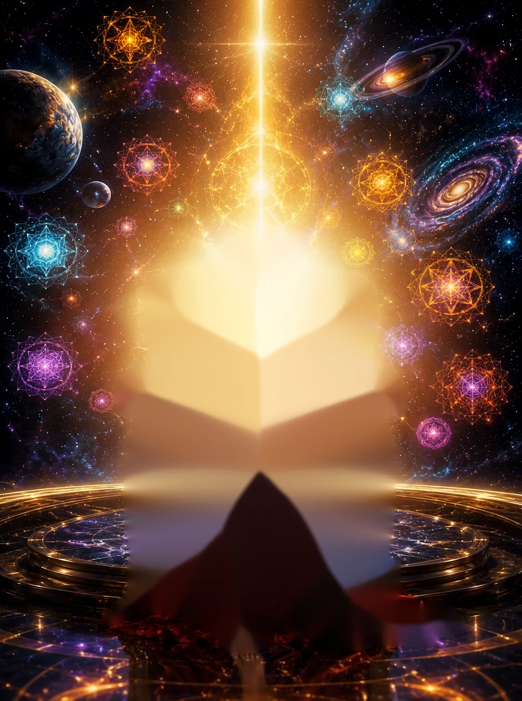
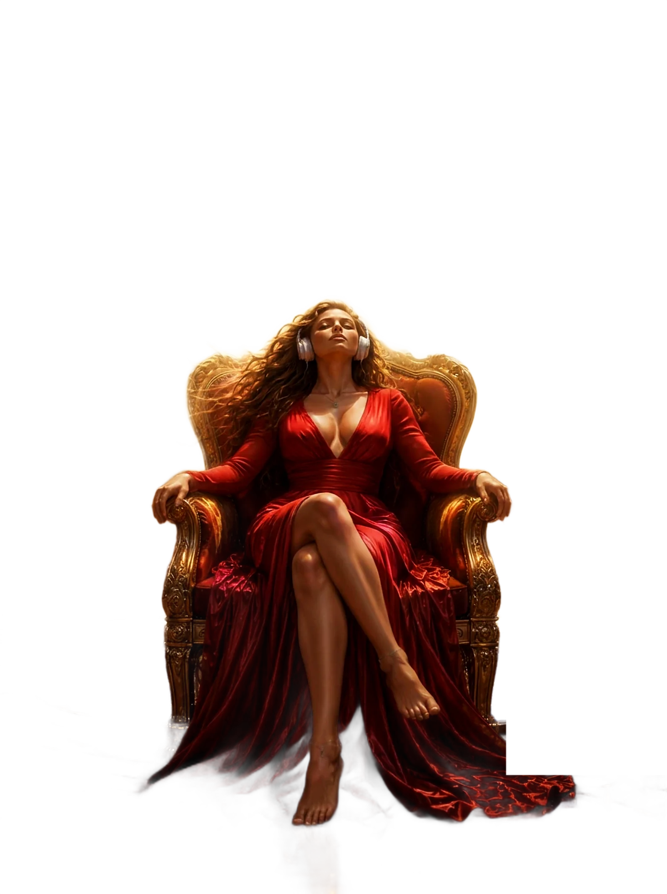

Здесь шум стихает.
Пятнадцать минут, чтобы выдохнуть, почувствовать себя целым и снова услышать себя. Женский голос, ритмы и кокон защиты в начале каждой практики.
С чем вы пришли сегодня?
Выберите состояние — мы откроем кабинет, который поможет именно сейчас.
Мир шумит. Здесь можно услышать себя.
Новости, чаты, чужие ожидания. Внимание раздёргано, и своё желание уже трудно отличить от навязанного.
Аджна — это пятнадцать минут, когда никто ничего от вас не хочет. Каждая практика начинается с кокона защиты, проходит через дыхание и ведёт к одной задаче: отпустить, наполниться силой, снять шоры или просто стать тише.
Как устроена сессияОдна практика. Одна задача.
Перемены приходят шаг за шагом.
Одна сессия даёт передышку. Регулярная практика меняет то, как вы реагируете, думаете и живёте. Так растёт любой навык.
Сегодня
Тише в голове, ровнее дыхание. Уже это немало.
Неделя
Легче возвращаться в спокойствие. Тяга и тревога слабее.
Месяц
Новые реакции становятся привычными. Перемены видны в делах и отношениях.
Дальше
Бывают дни, когда не получается. Это часть пути — вы просто возвращаетесь.
Четыре шага. Всегда в этом порядке.
Сначала защита и опора, потом дыхание. Только после этого — сама практика.
Кокон
Золотой кокон на два метра вокруг вас. На выдохе вы посылаете в него свет из сердца — и он становится плотным.
Дыхание
Две минуты в резонансном темпе. Сердце и дыхание входят в общий спокойный ритм.
Практика
Голос ведёт через задачу кабинета. Музыка и ритм подобраны под каждый шаг.
Возвращение
Мягкий выход: опора, движение, открытые глаза. Кокон остаётся с вами.
Коротко о главном.
Как часто практиковать?
Лучше понемногу, но регулярно: одна сессия в день или через день. Эффект накапливается, и первые перемены обычно заметны через одну–две недели.
Зачем кокон в начале каждой сессии?
Это ваше защищённое пространство. Когда внутри есть ощущение безопасности, ум перестаёт ждать угрозу и расслабление идёт глубже. Кокон остаётся с вами до конца практики.
Нужны ли наушники?
Да. Бинауральный ритм возникает, только когда в каждое ухо идёт свой звук. Громкость — тихая, на грани слышимости.
Что если не получается сосредоточиться?
Это нормально. Мысли уходят — вы возвращаетесь. Каждое такое возвращение и есть тренировка, с которой всё начинается.
На что опираются практики?
На изученные методы — резонансное дыхание, осознанность, работу с убеждениями, сочувствие к себе — и на традицию йоги. У каждого кабинета указана его основа.
Кому стоит быть осторожнее?
При эпилепсии, серьёзных психических расстройствах и после травм головы сначала посоветуйтесь с врачом. Не слушайте за рулём. Практика поддерживает, но не заменяет лечение.
Начните с очищения.
Двенадцать минут. Наушники, тишина, удобное кресло.